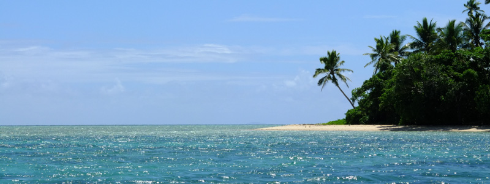
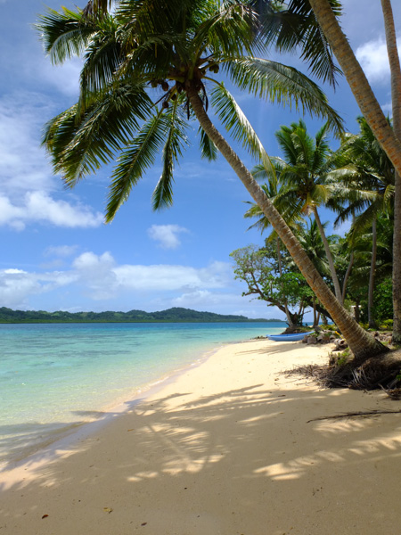
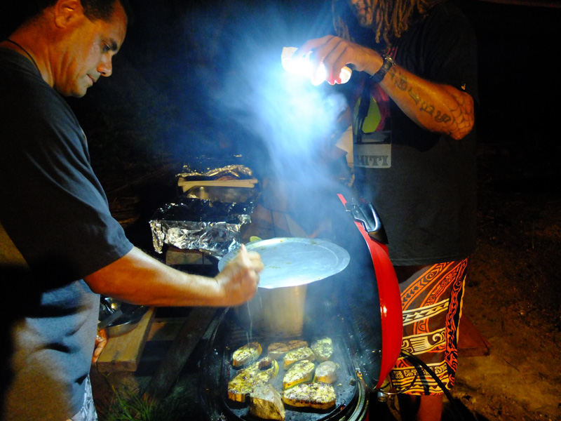
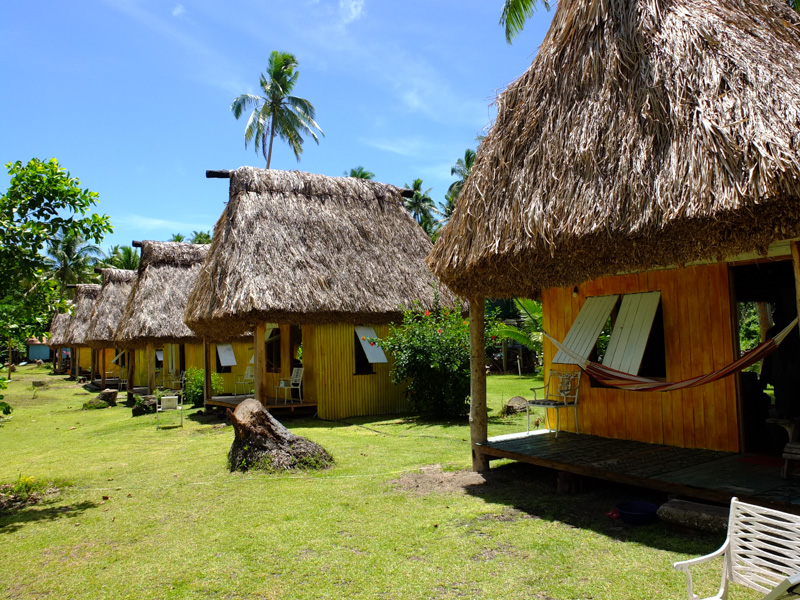
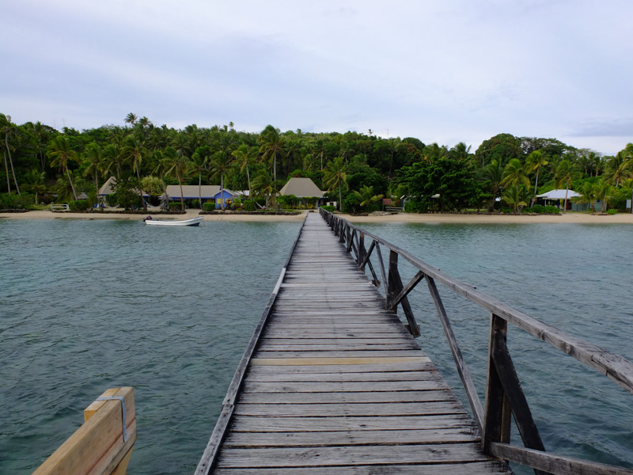

A stolen glance at Fiji

Fiji surprised me in many ways. The warmth of the people, the beauty of the landscapes and how these people are so proud of their country are all reasons why it was so easy to fall in love with the place. But Fiji has many egos and can be many different things to those who visit. Even to those who live in it.
As we saw it, there are three ways of exploring Fiji, which depend on budget and how long you can stay there for:

Splurge - The Mamanucas and Yasawas are a group of islands on the northwest of the main island. These are the post card images of Fiji, but expensive to get to and stay in. There doesn't seem to be a way of getting there that is cheap and run by locals, the most inexpensive dorm room in a resort is around FJD100, so it is mostly aimed at honeymooners or those on a planned or package holiday. Backpacking around these islands sounds like a nearly impossible thing to do.
With time - Fiji is your oyster. The northeastern groups of islands are more remote but take a while to get to as travel is slower (with ferries only twice a week to some islands). With time in your hands you can delve deeper and farther into the less visited islands, which means that you will sleep, eat and travel cheaper, get to meet the real Fijians and experience the genuine culture.
Little time and money - This was our case, you've guessed it. As this was a stop on a round the world trip booked nearly a year ago, it got unfairly shrunk to only a week, after we ended up spending longer than planned in Indonesia and Australia. But I'm glad we came at all and made the most of our time in this very special place. We only saw 3 of the 332 islands but were spoiled for beauty, cultural experiences and exclusivity, and without spending as much as we dreaded.
I had assumed that Fiji was going to be a hell hole of honeymooners, full of resorts, empty souls and people trying to hassle you. I was worried it would have become infused with popularity and the greed that comes with it and turned the natural beauty into disappointment. Places are like people, they may be beautiful on the outside, but after a while, its what's inside that counts.
But this is the Pacific. On arrival at the airport and even before going through customs, we were received by a trio of guitar players, wearing flowery shirts, singing a welcome song. It must have been the one hundred thousandth time they'd performed that song, but it didn't show. As they put their guitars down, we were the only foreigners still filling in our arrivals card, but their faces didn't say - "job done until the next load of tourists lands". It felt like the more people came through that gate, the better, and I felt that they where happy we came to see their home.
December is cyclone season in Fiji, so we expected rain. And we got rain, everyday. Which didn't matter - it's hot, so when the rain isn't an excuse to hide inside reading or sleeping, it's an excuse to go and get wetter. Swimming in tropical rain in a hot sea has to be any water lover's dream come true.
But for most of our visit to Fiji the sun shone, no cyclones threatened and the rain heavy clouds hovering in the distance added to the mood. Given that until the day before we arrived we had no idea of what we could do with such a short visit, it was lucky how it turned out.
We decided that the Mamanucas and Yasawas would break our bank. The north eastern groups were too far to reach and return from within a week. The main island, Viti Levu, was mostly downplayed and underrated by most blogs and travel sites we read. So we decided to head to a tiny island named Leleuvia that doesn't even show up on google maps, an hour by boat east of the main island.
From the airport we got a taxi ride that took us all the way around Viti Levu. We missed a night's sleep while flying from Brisbane, so our eyes kept trying to close, but the landscape was just too lush and exotic and the fear of missing out on anything kept us interested. For three hours, we traveled sandwiched in between steep dark green mountains and the Pacific Ocean. Only five hours after landing we where already wishing we could stay longer.
Leleuvia Island Resort's boat picked us up at Bau Landing and whizzed us onto a tiny sandy dot on a hot sea. It was Monday and there were only two other guests in the whole island. It rained all afternoon, a great excuse to catch up on sleep.
In the evening we were invited to join the seasons festivities at the resort staff's Christmas Party. This involved a lot of Kava drinking, a huge BBQ followed by Secret Santa and dancing to Fiji's own version of Gangnam Style.

The next couple of days were spent pinching ourselves for we couldn't believe we'd found this place. This isn't a five star type resort, the pool was the ocean, the bedrooms where in simple thatched roof bamboo walled cottages, and the bathroom and showers were shared. But the place was built with careful detailing and using traditional materials and techniques, the water was crystal clear, and the treatment was personal so it felt like five stars.

But, it wouldn't have been fair on the other 331 islands to spend all week in one place, so we moved on. Only next door though, to Caqalai Island, another white sand donut we'd heard good things about. It was so close to Leleuvia that people had managed to swim to it in the past. Here the bure (cottages) were more rustic and rough, painted bright yellow which made them charming, there were solar panels for lighting and charging things and you could walk around the island in twenty minutes. We went snorkeling from Snake Island - a small rock outcrop you can walk to at low tide - and we saw a sea snake, lots of Christmas Trees (the animal) plus a shark. Not sure it was a just reef shark.
From here the wind blew us back onto the main island up a winding river with mangrove margins to Waidalice landing. Here we hopped on a ute whose open back showed us very scenic views of those tropical mountains we'd seen on our first day and mud coloured rivers all the way to Elington Wharf on the north east of the main island. Here, another boat took us to Nananou-i-ra Island, as we prepared to slowly drift towards our port of departure in Nadi.
Unfortunately here we were slightly less lucky and the place we chose to stay at was in a bit of a state. On arrival at the Safari Lodge, the beach that welcomed us was covered in plastic packaging and, within five minutes of arriving the mosquitoes had also presented us their welcome gifts. Just as well it rained for the rest of the day. This, added to the value for money on offer, prompted us to go find somewhere else the next day. Turned out it was a lot more welcoming on the other side of the island.
The nice Fijian lady, who ran Macdonald's Cottages where we stayed on our last night, cooked us a tasty curry for dinner and we lounged in the sun between downpours, went swimming off the pier right out front and walked to the island's Sunset Point, yes at sunset, where Ed Morris (ex-president of the International Brotherhood of Magicians) has built a labyrinth, with ropes stuck to the ground for practicing walking meditation.

Before we left Fiji we promised we will be back one day. With plenty of time to dedicate to the Fijian islands and islanders, explore Viti Levu's highlands, hike into remote villages in the middle of volcano craters, take a boat that won't return until a week later and learn the real meaning of "Fiji time".
Comments